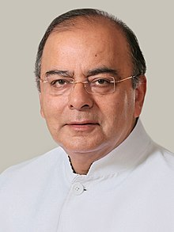

Arun Jaitely
1952 - 2019
Former Finance Minister Of India
Arun Jaitley, (born December 28, 1952, New Delhi, India—died August 24, 2019, New Delhi), Indian lawyer, politician, and government official who served as leader of the Bharatiya Janata Party (BJP) in the Rajya Sabha (upper chamber of the Indian parliament) in 2009–14. In 2014 he joined the cabinet of the BJP-led government of Prime Minister Narendra Modi. Jaitley was known as an eloquent speaker, and his political and professional career was largely noncontroversial.
Time Line
- Union Minister for Information and Broadcasting (1999–2000) On 13 October 1999, after the Vajpayee Government of the BJP led National Democratic Alliance came to power, he was appointed Minister of State for Information and Broadcasting (Independent Charge).
- Union Minister of Law and Justice (2000–04) In November 2000 and was made a Cabinet Minister for the Ministry of Law, Justice and Company Affairs and Shipping. The Ministry of Surface Transport was bifurcated and he was appointed as the first Minister of Shipping.
- Leader of the Opposition, Rajya Sabha (2009–14) He was chosen as the Leader of the Opposition in the Rajya Sabha on 3 June 2009 by L.K. Advani. On 16 June 2009, he resigned from the post of General Secretary of the BJP, as per his party's One Man One Post principle. He was also a member of the Central Election Committee of the party. Union Finance Minister (2014–19) Jaitley taking charge as the Union Minister for Finance, in New Delhi on 27 May 2014 On 26 May 2014, Jaitley was selected by newly elected Prime Minister Narendra Modi to be the Minister of Finance, the Minister for Corporate Affairs and the Minister of Defence, in his cabinet. Analysts cited Jaitley's "part-time" focus on defence as a simple continuation of the policies of the previous government.
Illness and death
-
Jaitley had a series of health-related issues and underwent multiple surgeries leading into his deteriorating health and subsequent death in 2019. In 2005, he underwent a coronary artery bypass surgery after he was diagnosed with high blood pressure.
- In February 2019, the media reported that Jaitley had been diagnosed with a rare form of soft-tissue sarcoma and was undergoing treatment in the US, although it was termed a "regular medical check-up"
Legacy
- On 12 September 2019, Delhi's Feroz Shah Kotla stadium was renamed as Arun Jaitley Stadium at a function held at Jawaharlal Nehru Stadium in memory of Jaitley. The decision to name the stadium after him came as he was once the president of DDCA and also the vice-president of the BCCI.